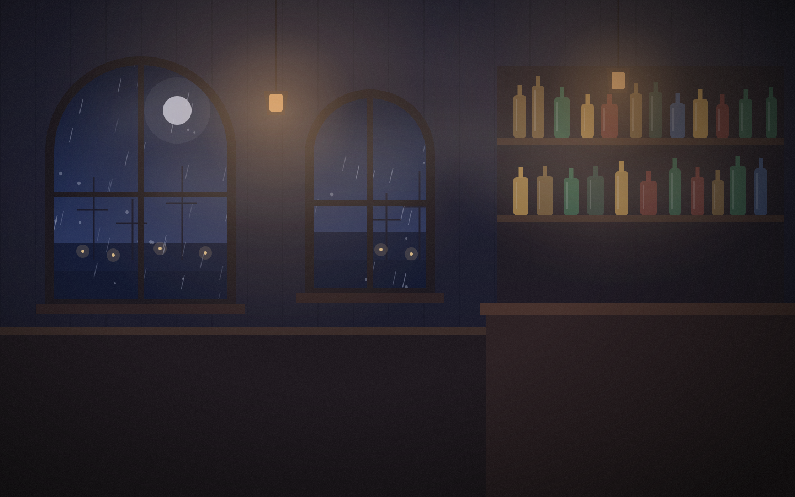
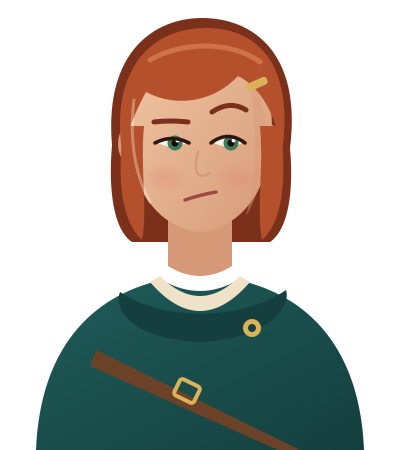
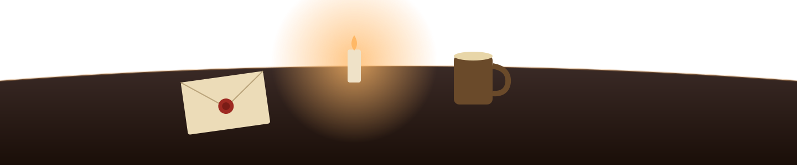
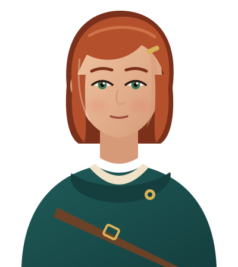

MiraYear 7 · 19:18
Aren? Gods, it’s been years. That ledger of yours… behind the bar, wasn’t it? Somewhere back there.



Aren? Gods, it’s been years. That ledger of yours… behind the bar, wasn’t it? Somewhere back there.
It was never behind the bar. I buried it by the lighthouse, remember?

frowns The lighthouse? I could have sworn… Six years is a long time.